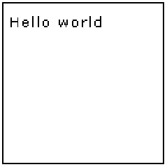
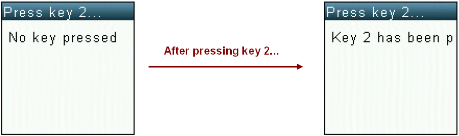
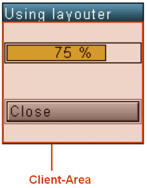
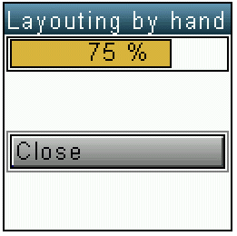
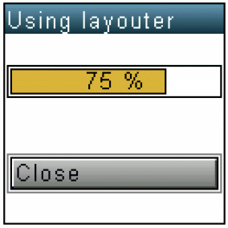

The following implementation of a sample application should convey a feeling for APOXI. Detailed descriptions about the used classes are given in later chapters.
In order to write a "Hello world"-application on the mobile phone, a window needs to be created for drawing a text. Here is the header-file for the class MyWindow:
MyWindow.hpp
#include <Gui/Window.hpp>
class MyWindow : public Window {
protected:
virtual void OnPaint(const Rect& repaint_rect);
};
The class MyWindow is derived from the class Window and the method OnPaint must be implemented for the purpose of drawing the famous "Hello world". Here is the implementation of the class MyWindow:
MyWindow.cpp
#include "MyWindow.hpp"
void MyWindow::OnPaint(const Rect& repaint_rect)
{
Window::OnPaint(repaint_rect);
PaintDc pdc(GetDeviceContext());
pdc.DrawText(5, 10, L"Hello world");
}
First of all OnPaint calls the base-method Window::OnPaint(). All drawing-operations are performed on the device-context. The current device-context is provided by the method Window::GetDeviceContext().
The class PaintDc provides comfortable usage of a standard device-context. A temporary paint device-context can be created by invoking PaintDc pdc(GetDeviceContext()). Next the text "Hello world" is drawn at the position (5, 10) by calling pdc.DrawText(5, 10, L"Hello world").
Those are all the steps required for defining a window, which displays "Hello world". But windows also need to be embedded in a common context, which is provided by an application. So before opening any window, an application must be created:
MyApplication.hpp
#include <Kernel/Application.hpp>
#include "MyWindow.hpp"
class MyApplication : public Application {
protected:
virtual void OnOpen();
private:
MyWindow m_my_window;
};
The class MyApplication is derived from Application. The member m_my_window is added for embedding the previously defined window within the application. m_my_window is an instance of MyWindow. Here is the implementation of the application:
MyApplication.cpp
#include "MyApplication.hpp"
void MyApplication::OnOpen()
{
Application::OnOpen();
m_my_window.Init();
m_my_window.OpenModeless();
}
First of all the base class method Window::OnOpen() is called. Then the window is initialized by m_my_window.Init() and opened in modeless mode by invoking m_my_window.OpenModeless().
Alternatively it would have been possible to use a pointer to MyWindow and invoke m_my_window = new MyWindow() instead of m_my_window.Init(). The reason for using the method Init instead of dynamical allocation and using the constructors is explained in chapter 10 in detail.
The visual result of the code above does not look spectacular, but fulfils our demands of displaying "Hello world":

In general, the usage of hardcoded strings should be avoided, as many applications have to be shipped supporting different languages. The next paragraph will point out how APOXI provides an easy way for creating localized applications.
The programmer simply has to pass all texts to the Tr()-method ("Translate") before displaying them. So instead of handing over "Hello world" to Window::DrawText directly:
pdc.DrawText(5, 10, L"Hello world")
the usage should look like this
pdc.DrawText(5, 10, Tr(L"Hello world"))
The translate method performs a fast lookup within a translation table and returns the translated text string. Tr() will return its argument, if no translation table is available. This means that during the development of an application no translation table is required and can be added at later stages.
Instead of displaying "Hello world" MyWindow will be modified to display "No key pressed" After pressing the key "2" the text should change to "Key 2 pressed":

MyWindow.hpp#include <Gui/Window.hpp>
class MyWindow : public Window {
public:
void Init();
protected:
virtual void OnPaint(const Rect& repaint_rect);
virtual BOOLEAN OnKeyDown(KeyCode key_code);
private:
const WCHAR* m_text;
};
MyWindow.cpp
#include "MyWindow.hpp"
#include <Config/KeyboardConfig.hpp>
void MyWindow::Init()
{
Window::Init();
SetTitle(Tr(L"Press key 2..."));
m_text = Tr(L"No key pressed");
}
void MyWindow::OnPaint(const Rect& repaint_rect)
{
Window::OnPaint(repaint_rect);
PaintDc pdc(GetDeviceContext());
pdc.DrawText(5, 10, m_text);
}
BOOLEAN MyWindow::OnKeyDown(KeyCode key_code)
{
if (key_code == KeyboardConfig::GetNumber(2)) {
m_text = Tr(L"Key 2 has been pressed");
Invalidate();
return TRUE;
}
else
return Window::OnKeyDown(key_code);
}
The method Window::OnKeyDown() is invoked whenever a key has been pressed. MyWindow is extended by the member m_text which is a pointer to a string. This string should be modified when pressing the key "2".
In MyWindow::Init() m_text is initialized with "No key pressed". When the Window is opened MyWindow::OnPaint() is called and "No key pressed" is displayed. Pressing the key "2" invokes a call of MyWindow::OnKeyDown(). The key-code is submitted by the parameter key_code and can be compared with configurated key-codes. The configurated key-codes are defined by the class KeyboardConfig.
When changing data which should be displayed, the window must be invalidated to trigger a paint-event. This can be done by invoking Window::Invalidate(). Window::OnKeyDown() offers a BOOLEAN as return-value, which indicates whether a key has been dispatched. If the key is not treated, the base-method should be called.
Invalidating a window because data has been changed is not very comfortable and might lead to an inconistent state between display and data (e. g. when forgetting an invalidation). Drawable objects offer an easy way for encapsuling data which should be displayed.
MyWindow.hpp
#include <Gui/Window.hpp>
#include <Gui/TextLine.hpp>
class MyWindow : public Window {
public:
void Init();
protected:
virtual BOOLEAN OnKeyDown(KeyCode key_code);
private:
TextLine m_text_line;
};
MyWindow.cpp
#include "MyWindow.hpp"
void MyWindow::Init()
{
Window::Init();
SetTitle(Tr(L"Press key 2..."));
m_text_line.Init(this, Tr(L"No key pressed."));
m_text_line.SetPos(5, 10);
}
BOOLEAN MyWindow::OnKeyDown(KeyCode key_code)
{
if (key_code == KeyboardConfig::GetNumber(2)) {
m_text_line.SetText(Tr(L"Key 2 has been pressed!"));
return TRUE;
}
else
return Window::OnKeyDown(key_code);
}
The drawable object TextLine is able to show a text on a given position. When the text is changed, the window will automatically be invalidated and hence redrawn where necessary. There is no need anymore to overwrite Window::OnPaint(), because every drawable object knows its position and size and is drawn automatically.
When more than one component is embedded into a window, the components have to be layouted by assigning them a position and a size. This can be done in Window::Init(), but has the disadvantage that later changes on the size of the window are ignored. Hence APOXI offers another entry-point for doing the layout of components: When opening a window and whenever the size changes, the method Window::OnLayoutClient() will be called. In this method the components can be adjusted inside the client-area.

In the following example the layouting is done by asking the window for its size and adjusting the size and position of the progressbar and a pushbutton.
MyWindow.hpp
#include <ApoxiLib.hpp>
class MyWindow : public Window {
public:
void Init();
protected:
virtual void OnLayoutClient();
private:
ProgressBar m_progress_bar;
PushButton m_push_button;
CloseWindowAction m_close_win_action;
};
MyWindow.cpp
#include "MyWindow.hpp"
void MyWindow::Init()
{
Window::Init();
SetTitle(Tr(L"Layouting by hand"));
m_progress_bar.Init(this, 75);
m_close_win_action(this, this, Tr(L"Close"));
m_push_button.Init(this, &m_close_win_action);
}
void MyWindow::OnLayoutClient()
{
Window::OnLayoutClient();
m_progress_bar.SetPos(0, 0);
m_progress_bar.SetSize(GetClientWidth(),
m_progress_bar.GetDefaultHeight());
m_push_button.SetPos(0, GetClientHeight() / 2);
m_push_button.SetSize(GetClientWidth(),
m_push_button.GetDefaultHeight());
}
This implementation is acceptable when having 2 or 3 controls, but when a complex layout with centered and nested controls is needed, this will get way too complicated.

APOXI offers the class Layouter for this problem. For having a similar layout as above by using a layouter, the implementation of OnLayoutClient() will look like this:
void MyWindow::OnLayoutClient()
{
Window::OnLayoutClient();
Layouter layouter(1, 2, this);
layouter.Arrange(0, 0, &m_progress_bar);
layouter.Arrange(0, 1, &m_push_button);
}
The layouter is capable of layouting components and recursively other layouters inside a grid. The number of horizontal and vertical cells inside the grid can be specified in the constructor: The first parameter specifies the number of horizontal cells, the second parameter specifies the number of vertical cells. The layouter must know the available width and height for the grid. This is submitted by passing the Window. Invoking Layouter layouter(1, 2, this) results in a grid with 2 cells.
By layouter.Arrange(0, 0, &m_progress_bar) the progress-bar is arranged in the cell with the index (0, 0) (Note: the index starts at zero). layouter.Arrange(0, 1, &m_push_button) arranges the push-button in the cell with the index (0, 1).
In contrast to the layouting by hand the layouter respects default widths and heights from components and centers each component inside a cell instead of increasing the boundaries to the maximum available size:

[ Previous: Concepts ] [ Next: Items ]